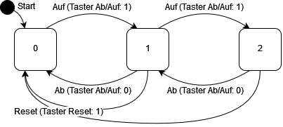
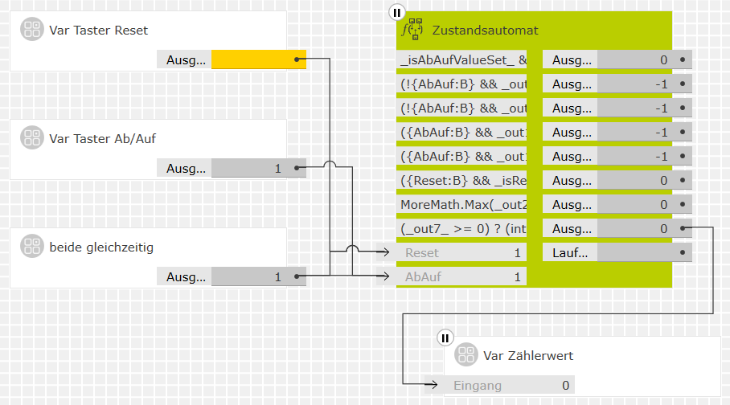

Formelberechnung
Formelberechnung
Inhaltsverzeichnis

- Beschreibung
- Eingänge
- Ausgänge
- Parameter
- Platzhalter für Variablen
- Welche Eingangswerte sind neu?
- Ausgangswerte als Variablen
- Literale Konstanten
- Operatoren
-
Funktionen
Mathematische Funktionen – Textbearbeitung – Beleuchtungssteuerung – Heizungs-, Lüftungs- und Klimatechnik (HLK) - Kommentare
-
Beispiele
Feiertage – UNIX-UTC-Zeitstempel umwandeln – Verbesserter Schwellwert mit Hysterese – Summenzähler – Zustandsautomat
Beschreibung
Dieser Baustein errechnet aus einer oder mehreren mathematischen Formeln entsprechende Ausgabewerte. Die Formeln sind frei festlegbar. Sie können aus Konstanten, Platzhaltern für variable Eingangswerte, Rechenoperationen, Funktionsaufrufen und Kommentaren bestehen. Die Platzhalter bestimmen Anzahl, Namen und Porttypen der Eingänge.
Folgende Arten von Eingangs- und Ausgabewerten können verarbeitet werden:
-
Wahrheitswerte (
bool) -
Numerische Werte (Ganzzahlen
byte,int,longund Fließkommazahlendouble) -
Texte (
string)
In den Formeln können die üblichen Rechenoperationen (der Programmiersprache C#) verwendet werden. Darüber hinaus stehen auch viele nützliche Methoden des .NET 4.0 APIs zur Verfügung.
Implementierung und Lizenzen
Dieser Baustein würde eigentlich thematisch besser ins Paket "Recomedia Generische Logikbausteine" passen. Aus technischen Gründen – er nutzt dieselbe Platzhalter-Implementierung wie der Textformatierer – muss er aber in diesem Paket ausgeliefert werden.
Die Implementierung verwendet den Mono.CSharp.Evaluator-Service (Version 3.6.1). Dieser steht unter der MIT-Lizenz kostenlos mit Quelltext zur Verfügung.
Eingänge
Solange keine gültige(n) Formel(n) festgelegt wurde(n), hat der Baustein keine Eingänge. Eingänge werden nur durch gültige Platzhalter in den Formeln angelegt. Die Reihenfolge der Eingänge ergibt sich – für jeden Porttyp getrennt – aus der Reihenfolge der entsprechenden Platzhalter in den Formeln.
| Bezeichnung | Porttyp | Beschreibung |
|---|---|---|
|
aus Platzhalter |
Bool |
Werte für Wahrheitswert-Platzhalter |
|
aus Platzhalter |
Integer |
Werte für Ganzzahl-Platzhalter |
|
aus Platzhalter |
Number |
Werte für Fließkommazahl-Platzhalter (auch Prozentwerte) |
|
aus Platzhalter |
Text |
Werte für Text-Platzhalter |
Ausgänge
| Bezeichnung | Porttyp | Beschreibung |
|---|---|---|
|
Ausgang 1 |
je nach entsprechen- |
Alle Ausgänge geben erst dann Werte aus, wenn alle Eingangswerte vorliegen. Wenn mehrere Formeln und Ausgänge verwendet werden, gilt dies auch für Formeln, in denen die fehlenden Werte gar nicht vorkommen. Hinweise:
|
|
Laufzeitfehler |
Text |
Einige Fehler, die in den Formeln auftreten können, werden bereits bei der Validierung festgestellt und im GPA ausgegeben. Viele Fehler lassen sich aber erst beim Berechnen der Ausgangswerte – also zur Laufzeit des Bausteins in der GPA-Simulation oder nach der Inbetriebnahme auf dem Zielgerät – feststellen. Solche Fehler werden an diesem Ausgang als Texte gemeldet.
Beispiel: Der Fehler Hinweis: Die meisten Laufzeit-Fehlermeldungen werden – wie im Beispiel – in englischer Sprache ausgegeben. |
Parameter
| Bezeichnung | Porttyp | Als Eingang zuschaltbar? | Beschreibung |
|---|---|---|---|
|
Anzahl der |
Integer |
nein |
Dieser Parameter legt die Anzahl der Ausgänge des Bausteins im Bereich 1..50 fest. Da jeder Ausgang seine eigene Formel hat, legt dies auch die Anzahl der Formelparameter fest. |
|
Typ des |
Auswahl |
nein |
Diese Parameter legen fest, welchen Porttyp der entsprechende Ausgangswert jeweils haben soll. Möglich sind die folgenden Typen (mit ihren C#-Entsprechungen):
In Klammern ist jeweils der C#-Typ angegeben, wie er in Typumwandlungsoperatoren verwendet werden kann. Das Ergebnis der Formelauswertung muss sich in diesen Typ umwandeln lassen, sonst kann der Ausgang nicht gesetzt werden und es kommt zu einem Laufzeitfehler. |
|
Formel 1 |
Text |
nein |
Diese Parameter legen fest, wie die jeweiligen Ausgangswerte zu berechnen sind. Darin können Variablen, Konstanten, Operatoren, mathematische und andere Funktionen und Kommentare vorkommen. In den nächsten Kapiteln sind alle diese detailliert beschrieben. |
Platzhalter für Variablen
Platzhalter in den Formeln dienen dazu, variable Eingangswerte in den Berechnungen zu verwenden. Sie dürfen überall stehen, wo auch eine Konstante des gleichen Typs stehen dürfte.
Es gibt zwei grundlegende Arten von Platzhaltern:
-
Definition – definiert erstmals einen Eingang
mit Namen und Typ und hat die folgende Form:
{Eingangsname:T} -
Referenz – bezieht sich auf einen vorher definierten
Eingang. Sie folgt der gleichen Form, wobei
:T weg gelassen werden darf.
Eingangsname wird als Bezeichnung des Baustein-Eingangs verwendet. Definitionen legen Eingänge an und setzen deren Werte in die Formel ein. Referenzen beziehen sich auf einen vorher definierten Namen und verwenden den Wert des entsprechenden Eingangs erneut. Sie dürfen sich auch auf Namen beziehen, die in einer anderen Formel mit einer niedrigeren Nummer definiert worden sind. Referenzen dürfen keinen von der Definition abweichenden Datentyp festlegen.
Eingangsname muss mit einem Buchstaben beginnen. Weiter kann
er auch Ziffern (0..9) und Unterstriche (_) enthalten.
Leerzeichen und andere Sonderzeichen sind nicht zulässig. Leerzeichen
am Anfang oder am Ende sind erlaubt, werden aber nicht in den Namen
übernommen.
T ist ein Buchstabe, der den Datentyp des Eingangs
festlegt.
Folgende Buchstaben – Groß- und Kleinbuchstaben haben gleiche
Bedeutung – sind möglich:
B-
Wahrheitswert (
bool) – Mögliche Werte:true,false I-
Ganzzahl (
int) – Wertebereich -2 147 483 648 .. 2 147 483 647 F,N,GoderP-
Fließkommazahl (
double) – Wertebereich etwa -1.7 × 10308 .. 1.7 × 10308 mit einer Genauigkeit von mindestens 15 geltenden Ziffern S-
Text (
string) – ASCII-, ISO-8859-1- oder Unicode-Text
Hinweis:
Bei numerischen Berechnungen sind die angegebenen Wertebereiche zu beachten.
Werden sie in irgend einem Teil der Formel überschritten, kommt es zu
falschen Ergebnissen.
Welche Eingangswerte sind neu?
Für jeden Eingang wird eine Variable bool _is<name>ValueSet_ angelegt. Diese gibt an, ob der Eingang für die laufende
Berechnung ein neues Eingangstelegramm erhalten hat (true) oder
ob der Wert von einem früheren Eingangstelegramm stammt (false).
Ob sich der Eingangswert durch dieses Telegramm tatsächlich geändert
hat (oder nur der gleiche Wert erneut empfangen worden ist), lässt sich
daraus nicht ableiten. Das Beispiel Zustandsautomat zeigt eine Anwendung dieser Variablen.
Ausgangswerte als Variablen
Aktuelle und vorherige Ausgabewerte können in den Formeln als Variablen
verwendet werden. Diese Variablen haben die Namen _out1_ ..
_out49_ (für aktuelle Werte) bzw. _previousOut1_ ..
_previousOut50_ (für vorherige Werte). Sie dürfen überall stehen,
wo auch eine Konstante des gleichen Typs stehen dürfte.
Aktuelle Werte sind solche, die seit der letzten Änderung eines Eingangs neu berechnet worden sind. Durch ihre Verwendung lassen sich große Formeln (oder solche, in denen Zwischenergebnisse mehrfach verwendet werden) in übersichtliche Teile zerlegen. Wird ein Zwischenergebnis nur in den weiteren Formeln (also nicht außerhalb des Bausteins) benötigt, so bleibt der entsprechende Ausgang unbelegt. Das Beispiel Verbesserter Schwellwert mit Hysterese benutzt einen solchen Formelsatz.
Vorherige Werte sind solche, die zuletzt vor der aktuellen Berechnung auf die Ausgänge gegeben worden sind. Dabei ist zu beachten, das jede Änderung eines Eingangs alle Formeln neu berechnet (auch solche die den geänderten Eingangswert gar nicht verwenden). Damit lassen sich u. a. einfache Zustandsautomaten realisieren, wie im Beispiel Zustandsautomat gezeigt ist. Das Beispiel Summenzähler zeigt eine weitere nützliche Anwendung dieser Variablen.
Folgende Werte können in einer Formel verwendet werden, deren Nummer n sei:
-
Aktuelle Werte können nur aus Formeln mit niedrigeren
Nummern (
_out1_.._out<n-1>_) verwendet werden. Sie stehen also nur zur Verfügung, wenn es mehrere Formeln gibt. Dies vermeidet zyklische Abhängigkeiten. -
Vorherige Werte können aus allen Formeln verwendet
werden. Das schließt die eigene und höhere Nummern
(
_previousOut<n>_..) ein. (Zu zyklischen Abhängigkeiten führt das nicht, weil diese Werte erst wieder vor den Berechnungen für die nächste Änderung aktualisiert werden.)
Nach einer Inbetriebnahme oder einem Neustart des Logikmoduls gibt es
zunächst keine Werte aus vorherigen Berechnungen. Je nach Typ werden
bis zum ersten Setzen eines Ausgangs n die folgenden Werte für
_previousOut<n>_ verwendet:
- NUMBER
0.0- INT64, INTEGER, BYTE
0- BOOL
false- STRING
""(Leerstring)
Literale Konstanten
| Konstante | Datentyp | Beschreibung |
|---|---|---|
|
Zahl |
|
Zahlen, die ohne Dezimaltrennzeichen angegeben werden, also nur aus
Ziffern bestehen, sind Ganzzahlen (
Ganzzahlen können auch in hexadezimaler Schreibweise angegeben werden,
indem man ihnen
Fließkommazahlen ( |
|
|
|
Logische Wahrheitswerte. |
|
|
|
Die Kreiszahl (π = 3.141...) |
|
|
|
Die Eulersche Zahl (e = 2.718...) |
|
|
|
Nicht wirklich Konstanten, da die Werte vom Zeitpunkt des Aufrufs abhängen:
Hinweis: Objekte vom Typ |
|
|
|
Literale ASCII- oder Unicode-Text-Konstante |
|
|
— |
Das typlose "nichts" kann überall stehen wo ein beliebiger auf NULL festlegbarer Typ zulässig ist. Nützlich ist das vor allem, wenn man in einem Zweig eines Bedingungsoperators keinen Wert an einen Ausgang senden möchte. Für Ausgänge vom Typ STRING funktioniert das direkt. Für alle anderen Ausgangstypen muss man im anderen Zweig des Bedingungsoperators explizit die auf NULL festlegbare Variante des Ausgabetyps verwenden. Das Beispiel Verbesserter Schwellwert mit Hysterese zeigt, wie man das mit Typumwandlungs-Operatoren erreicht. |
Operatoren
Alle C#-Operatoren, die sich auf verfügbare Datentypen anwenden lassen, sind zulässig. Die wichtigsten davon sind:| Rang-folge | Assozia-tivität | Operator | Bezeichnung | Datentypen | Beschreibung und Beispiel |
|---|---|---|---|---|---|
|
1 |
Von rechts nach links |
|
Vorzeichen |
alle |
Kein Vorzeichen oder |
|
|
NICHT |
|
Invertiert den nachfolgenden booleschen Ausdruck ( |
||
|
2 |
Von rechts nach links |
|
Typumwand- |
alle → T |
Erzwingt eine Typumwandlung des nachfolgenden Ausdrucks auf T. Für T können – über die an Ein- und Ausgängen möglichen Typen hinaus – auch viele andere Werttypen von C# stehen. Beispiel: |
|
3 |
Von links nach rechts |
|
Punkt-Grund-rechenarten |
alle |
Hinweise: Bei der Division von Ganzzahlen wird das Ergebnis nicht gerundet, sondern eventuelle Nachkommastellen einfach abgeschnitten. Man vergleiche die folgenden Beispiele:
Um Fließkommazahlen auf Ganzzahlen zu runden, braucht man übrigens keine Formelberechnung, das kann schon der Typkonverter von Gira. |
|
|
Divisionsrest |
|
Ergibt den Divisionsrest einer ganzzahlingen Division. |
||
|
4 |
Von links nach rechts |
|
Strich-Grund-rechenarten |
alle |
|
|
5 |
Von links nach rechts |
|
Relational |
alle |
Vergleicht zwei Werte und ergibt
Beispiel: |
|
6 |
|
Gleichheit, |
|||
|
7 |
Von links nach rechts |
|
UND |
|
Logische Operatoren mit vollständiger Auswertung.
Hinweis: |
|
8 |
|
Exklusiv-ODER |
|||
|
9 |
|
ODER |
|||
|
10 |
Von links nach rechts |
|
UND |
|
Logische Operatoren mit bedingter Auswertung, d. h. die Auswertung erfolgt nur so weit, bis das Ergebnis feststeht. Beispiel: |
|
11 |
|
ODER |
|||
|
12 |
Von rechts nach links |
b |
Bedingung |
|
Gibt x zurück, wenn b Beispiel: |
Die ersten beiden Spalten der Tabelle geben an, wie nicht geklammerte
Ausdrücke ausgewertet werden. Darin ist z. B. auch die bekannte Regel
"Punkt vor Strich" enthalten: * und / werden vor
+ und - ausgewertet. Geklammerte Ausdrücke
(...) werden "von innen nach außen" berechnet.
Weitere Angaben dazu finden sich im Abschnitt
Operatorrangfolge
der C#-Sprachreferenz.
Obwohl Variablendeklarationen und Zuweisungen in Formeln generell
nicht erlaubt sind, können dennoch temporäre Objekte mit dem
new-Operator
erzeugt und innerhalb einer Formel verwendet werden. Das Beispiel
UNIX-UTC-Zeitstempel umwandeln
zeigt eine nützliche Anwendung.
Funktionen
Soweit ihre Parameter- und Rückgabetypen sinnvoll verwendbar sind, stehen viele Klassen des gut in deutscher Sprache dokumentierten .NET 4.0 APIs mit ihren Funktionen zur Verfügung. Dieses Kapitel geht nur auf einige besonders nützliche Bereiche und Besonderheiten ein.
Neben dem .NET-Framework stehen eigene Erweiterungen vor allem zur Beleuchtungs- und Klimatechnik zur Verfügung.
Mathematische Funktionen: Math-Bibliothek und Erweiterungen
Die meisten Math-Methoden des .NET-4.0-Standards können in den Formeln verwendet werden.
Beispiel: Math.Pow({x:N},{y:N}) berechnet aus den beiden Eingangswerten
x und y deren Potenz xy.
Die trigonometrischen Funktionen der Math-Bibliothek verwenden
und liefern alle Winkelangaben im Bogenmaß. Zur Umrechnung zwischen Grad-
und Bogenmaß stehen die folgenden beiden Funktionen der
Angle-Erweiterung zur Verfügung:
| Funktion | Datentyp | Beschreibung |
|---|---|---|
|
|
|
Rechnet den im Bogenmaß gegebenen Winkel rad ins Gradmaß um. |
|
|
|
Rechnet den im Gradmaß gegebenen Winkel deg ins Bogenmaß um. |
In der Math-Bibliothek stehen Funktionen zur Berechnung von
Minima und Maxima nur mit zwei Parametern zur Verfügung. Oft benötigt man
aber mehr Eingabewerte. Um dann keine unschöne Schachtelung anwenden zu
müssen, gibt es die folgenden beiden Methoden, die beliebig viele Parameter
verarbeiten können:
| Funktion | Datentyp | Beschreibung |
|---|---|---|
|
|
|
Gibt den niedrigsten Wert unter den gegebenen Parametern zurück. |
|
|
|
Gibt den höchsten Wert unter den gegebenen Parametern zurück. |
Funktionen zur Textbearbeitung
ToString mit seinen verschiedenen Varianten für alle numerischen Typen erlaubt die sehr flexible Formatierung von Zahlen als Texte. Auch können fast alle String-Methoden des .NET-4.0-Standards verwendet werden.
Beispiel Textersetzung: Mit {text:S}.Replace("alt","neu")
wird der Eingangstext: "Alles alt macht der Mai" am Ausgang zu
"Alles neu macht der Mai".
Funktionen zur Beleuchtungssteuerung
Die Funktionen der Light-Erweiterung rechnen gängige Größen
der Beleuchtungstechnik um:
| Funktion | Datentyp | Beschreibung |
|---|---|---|
|
|
|
Rechnet die als einzelne 8-Bit-Werte (DPT 5.x) gegebenen Farbgrößen für Farbwert (hue), Farbsättigung (saturation) und Hellwert (value) in eine kombinierte HSV-Größe (3 Bytes, ähnlich zu DPT 232.600) um. Hinweise:
|
|
|
|
Extrahiert aus der gegebenen kombinierten HSV-Größe hsv (3 Bytes, ähnlich zu DPT 232.600) die einzelnen 8-Bit-Farbgrößen (DPT 5.x) für Farbwert (Hue), Farbsättigung (Saturation) oder Hellwert (Value). |
|
|
|
Rechnet die als einzelne 8-Bit-Werte (DPT 5.x) gegebenen Farbintensitäten für rot, grün und blau in eine kombinierte RGB-Größe (3 Bytes, DPT 232.600) um.
Die bereits oben zu |
|
|
|
Extrahiert aus der gegebenen kombinierten RGB-Größe rgb (3 Bytes, DPT 232.600) die einzelnen 8-Bit-Farbintensitäten (DPT 5.x) für Rot, Grün oder Blau. |
|
|
|
Rechnet die gegebene RGB-Größe – wahlweise einzelne 8-Bit-Werte (DPT 5.x) oder 3 Bytes kombiniert (DPT 232.600) – in eine kombinierte RGBW-Größe (6 bytes, DPT 251.600) um. Die Umrechnung extrahiert die gemeinsame Helligkeit aller Farben in einen entsprechenden Wert für weiß. Die Farbintensitäten für rot, grün und blau werden so weit reduziert, dass mindestens eine dieser Farben ganz weg fällt.
Alle vier Werte im erzeugten DPT 251.600 sind gültig (und auch so markiert).
Die bereits oben zu |
|
|
|
Rechnet die gegebenen Farbintensitäten für rot, grün, blau und weiß in eine kombinierte RGBW-Größe (6 bytes, DPT 251.600) um. Gültige Intensitäten liegen im Wertebereich 0..255. Werte außerhalb dieses Bereichs werden als 0 übernommen und ungültig markiert. |
|
|
|
Extrahiert aus der kombinierten RGBW-Größe rgbw (6 bytes, DPT 251.600) gültige Intensitäten für Rot, Grün, Blau oder Weiß im 8-Bit-Wertebereich 0..255. Als ungültig markierte Intensitäten werden mit dem Wert -1 zurück gegeben. Hinweise:
|
|
|
|
Rechnet Farbangaben zwischen dem RGB-Farbraum und dem HSV-Farbraum um.
Die bereits oben zu |
Mit diesen Funktionen lässt sich z. B. aus einem HSV-Controller eine RGBW-LED-Leiste ansteuern.
Funktionen für die Heizungs-, Lüftungs- und Klimatechnik (HLK)
Die Funktionen der Hlk-Erweiterung helfen bei der Realisierung
von Heizungs- und Lüftungsreglern.
| Funktion | Datentyp | Beschreibung |
|---|---|---|
|
|
|
Errechnet aus der gedämpften (zeitlich gemittelten) Außentemperatur TaAvg in °C und weiteren Parametern die benötigte Vorlauftemperatur für einen Heizkreis. Die Parameter passen die Heizkurve an die Gegebenheiten des Gebäudes und der Heizungsanlage an. Aufgrund des Umfangs findet sich die genaue Beschreibung dieser Funktion und ein Anwendungsbeispiel auf einer eigenen Seite. |
|
Viele Außen- und Raumsensoren können Temperatur (in °C) und relative Luftfeuchtigkeit (in %) messen. Die folgenden Funktionen errechnen daraus andere in der Lüftungs- und Klimatechnik wichtige Größen: |
||
|
|
|
Errechnet aus der Temperatur T in °C und der relativen Luftfeuchtigkeit rf in % die absolute Luftfeuchtiggkeit (in g/m3). Dieser Wert gibt an, wie viel Wasserdampf in einem Kubikmeter Luft enthalten ist. |
|
|
|
Errechnet aus der Temperatur T in °C und der relativen Luftfeuchtigkeit rf in % die Taupunkt-Temperatur (in °C). Dieser Wert gibt an, bei welcher Temperatur die relative Luftfeuchtigkeit 100% wäre, der Wasserdampf also gerade anfangen würde zu kondensieren. |
|
Da exakte Berechnungsverfahren nicht existieren, liefern beide Funktionen gute Näherungswerte auf der Grundlage der Magnusformel. Sie können beispielsweise dazu dienen, eine Lüftungsanlage (von der wir annehmen wollen, dass sie keinen Luftentfeuchter hat) bedarfsgerecht (also nicht unnötig) und zielorientiert (also nicht kontraproduktiv) zu steuern. So hat es z. B. keinen Sinn, einem Raum absolut feuchtere Außenluft zuzuführen, wenn Luftfeuchtigkeit und Taupunkt-Temperatur ohnehin schon höher sind als gewünscht. |
||
Kommentare
Die Formeln können mit Kommentaren in der Form
/* ... */ dokumentiert
werden. Darin kann anstelle von ... nahezu beliebiger Text
stehen. Solche Kommentare – auch mehrere davon – können
am Anfang, am Ende oder an anderen Stellen der Formel stehen.
Beispiele
Das Anwendungsbeispiel "Bedarfsgeführte Heizungsregelung" findet sich bei der Beschreibung der Funktion HeatingCurve.
Feiertage
An Feiertagen und ihren Vortagen sollen bestimmte
Automatisierungsfunktionen anders ablaufen als an normalen
Werktagen. Die folgende Formel berechnet dazu zunächst das
morgige Datum als STRING:
DateTime.Today.AddDays(1).ToString("d") /* Datum für Morgen errechnen */
Dieses dient als Parameter für eine Web-Anfrage mittels
Web Request oder
HTTP GET Request.
Der Request-Baustein wird mit folgender URL parametriert:
http://ipty.de/feiertag/api.php?do=isFeiertag&loc=BW&datum={Morgen}
Ein zweiter Request-Baustein verwendet fast die gleiche URL, aber
ohne den Datumsparameter (was implizit "heute" bedeutet):
http://ipty.de/feiertag/api.php?do=isFeiertag&loc=BW
In beiden steht BW für das Bundesland Baden-Württemberg;
die Kürzel für andere Bundesländer entnimmt man der
Online-Dokumentation
des Webservices.
Das komplette Logikblatt sieht so aus – wieder mit beispielhaften
Simulationsdaten:

Der Triggereingang löst eine neue Formelauswertung aus. Er wird an die Request-Bausteine nur durch gereicht (Ausgangstyp BOOL). Er sollte täglich kurz nach Mitternacht eine 1 erhalten. Wir nutzen, dass die Formelberechnung alle Formeln neu rechnet, sobald sich ein Eingangswert ändert: Die Datumsberechnung hat gar keinen Eingangswert, wird aber dennoch angestoßen, sobald ein Trigger eintrifft.
UNIX-UTC-Zeitstempel umwandeln
Viele Webservices verwenden für Datums- und Zeitangaben Ganzzahlen als
Zeitstempel. Inhalt ist die Anzahl der Sekunden seit dem 1.1.1970, 0:00
Uhr. Meist sind diese nicht in lokaler Zeit, sondern in "Koordinierter
Weltzeit" (französisch "Temps universel coordonné", Abkürzung UTC)
angegeben. Um solche Zeitangaben in einer Visualisierung verwenden zu
können, muss man sie zu einem Text in lokaler Zeit wandeln. Das tut die
folgende Formel:
(new DateTime(1970,1,1,0,0,0,0,DateTimeKind.Utc)).AddSeconds({unixUtcTimestamp:I}).ToLocalTime().ToString()
Der new-Operator erzeugt zunächst ein DateTime-Objekt
mit dem richtigen Startzeitpunkt. Nach dem Addieren der Sekunden des
UTC-Zeitstempels wandeln zwei weitere Funktionen das Objekt in den
gewünschten Text um.
Da dieser kombinierte Datums- und Zeit-Text länger als 14 Zeichen ist, kann er nicht auf dem KNX-Bus versendet, sondern nur innerhalb des L1/X1 verwendet werden. Abhilfe schaffen im Bedarfsfall z. B.
-
die Funktionen
DateTime.ToShortDateStringundDateTime.ToShortTimeString, die kürzere Texte getrennt nach Datum und Uhrzeit erzeugen -
ein Typ-Konverter, der aus Text einen Datenpunkt vom Typ
"Datum und Uhrzeit" erzeugen kann. Dazu verwendet man
zweckmäßig folgenden Parameter im letzten Funktionsaufruf
der Formel:
...ToString("s"). (Ohne diesen werden evtl. Tag und Monat vertauscht, weil der Gira-Typ-Konverter das Textformat nicht richtig erkennt.)
Verbesserter Schwellwert mit Hysterese
Der Gira-Baustein "Schwellwert mit Hysterese" setzt seinen Ausgang nur
dann neu, wenn ein neuer Auslöser-Wert eintrifft. Ändern sich nur die
Schwellwerte, so bleibt dies ohne Wirkung. Oft ist deshalb zusätzlich
Logik mit einem Wertgenerator für den Auslöser notwendig, um das
gewünschte Verhalten zu erreichen. Man erhält in diesen Fällen
übersichtlichere Logikblätter mit weniger Bausteinen, wenn man eine
Formelberechnung mit folgenden Formeln einsetzt:
Formel 1: {Auslöser:N} > {ObereSchwelle:N}
Formel 2: {Auslöser:N} < {UntereSchwelle:N}
Formel 3: _out1_ ? (bool?)true : (_out2_ ? (bool?)false : /* nichts senden */ null)
Alle drei Ausgänge sind vom Typ BOOL. Der dritte gibt das gewünschte
Endergebnis aus; die ersten beiden bleiben daher unbelegt. Solange
der Auslöser zwischen den beiden Schwellwerten liegt, ergeben die
beiden ersten Formeln jeweils false. Formel 3 gibt in
diesem Fall nichts aus.
Hinweise:
- Anders als beim Gira-Baustein "Schwellwert mit Hysterese" bleibt der Ausgang mit dieser Formel so lange undefiniert, bis ein Eingangstelegramm eintrifft, dessen Wert entweder unterhalb der unteren oder oberhalb der oberen Schwelle liegt. Man sollte daher die Eingangswerte nachfolgender Bausteine geeignet vorbelegen, sonst werden diese möglicherweise nach einem Neustart für längere Zeit nicht ausgeführt.
-
Wie beim Original-Gira-Baustein gibt es sinnvolle Ausgabewerte nur,
wenn die Schwellwerte nicht vertauscht werden. Im einfachsten Fall
legt man dazu direkt in der ersten Formel den oberen Schwellwert auf
eine höhere Zahl als den unteren Schwellwert fest:
Formel 1:{Auslöser:N} > ({UntereSchwelle:N} + 2.0) /* obere Schwelle */
Die beiden weiteren Formeln bleiben wie oben angegeben.
Summenzähler
Die folgende Formel erhöht, beginnend bei 0, mit jedem
eintreffenden Telegramm am Eingang Erhöhung den Ausgang
um den eingehenden Wert:
{Neustart:B} ? 0 /* neu starten */ : (_previousOut1_ + {Erhöhung:I}) /* aufsummieren */
Aufgrund des Bedingungsoperators gilt dies jedoch nur so lange,
wie der Eingang Neustart den Wert false hat.
Wenn und solange Neustart den Wert true hat,
wird jede Erhöhung verworfen und der Ausgang wird (oder
bleibt bei) 0.
Die angegebene Formel erzeugt am Ausgang eine Ganzzahl (z. B. INTEGER). Sie lässt sich leicht so abwandeln, dass sie Fließkommazahlen verarbeitet und ausgibt.
Zustandsautomat
Als Beispiel für einen einfachen Zustandsautomaten dient ein Auf-/Abwärtszähler
mit unterer Grenze 0 und oberer Grenze 2. Das folgende Zustandsdiagramm
zeigt, welche Zustände dieser Automat annehmen kann und welche Übergänge
zwischen ihnen möglich sein sollen:

Um die Formeln übersichtlich zu halten, hat jeder Zustandsübergang seine
eigene Formel, in der die Anfangsbedingung und der Zielzustand enthalten
sind. Wichtig ist, dass immer nur eine der Anfangsbedingungen
erfüllt ist. Dazu wertet die erste Formel aus, welche Eingänge aktuell
einen Wert erhalten haben. Nur wenn ein Auf- oder Ab-Telegramm, aber
kein kein Reset anliegt, lassen wir die Zustandsübergänge zum Auf- und
Abwärtszählen zu:
Formel 1: _isAbAufValueSet_ && !({Reset:B} && _isResetValueSet_)
Die Zustandsübergänge zum Auf- und Abwärtszählen benötigen außerdem den
aktuellen Zustand des Automaten, der zuletzt an Ausgang 8 ausgegeben
worden ist:
Formel 2: (!{AbAuf:B} && _out1_ && (_previousOut8_ == 1)) ? 0 : -1
Formel 3: (!{AbAuf:B} && _out1_ && (_previousOut8_ == 2)) ? 1 : -1
Formel 4: ({AbAuf:B} && _out1_ && (_previousOut8_ == 0)) ? 1 : -1
Formel 5: ({AbAuf:B} && _out1_ && (_previousOut8_ == 1)) ? 2 : -1
Der Reset führt unabhängig vom aktuellen Zustand immer in den Zustand 0:
Formel 6: ({Reset:B} && _isResetValueSet_) ? 0 : -1
Da die Formeln für alle nicht zutreffenden Zustandsübergänge -1
ausgeben, führt der tatsächlich zutreffende Zustandsübergang zu dem
Zustand, der sich aus dem Maximum der vorigen fünf Ergebnisse ergibt:
Formel 7: MoreMath.Max(_out2_, _out3_, _out4_, _out5_, _out6_)
Wenn dieses Maximum -1 ist, dann findet gar kein Zustandsübergang
statt. In diesem Fall soll auch nichts ausgegeben werden:
Formel 8: (_out7_ >= 0) ? (int?)_out7_ : null
Der gesamte Zustandsautomat lässt sich so mit einem einzigen
Formelberechnungs-Baustein realisieren, der hier mit beispielhaften
Simulationsdaten gezeigt ist:

Zuletzt wurde eine 1 gleichzeitig an Ab/Auf und Reset gesendet. Da der
Reset Priorität hat, wird das Auf-Telegramm verworfen. Der Ausgang steht
deshalb wie gewünscht auf 0.
Bei der Weiterverarbeitung des Ausgabewerts von Ausgang 8 ist zu beachten, dass der Startzustand immer 0 ist. Dieser wird aber beim Neustart des Logikmoduls nicht ausgegeben. Die Eingänge nachfolgender Logikbausteine müssen daher mit 0 vorbelegt sein.
Nach dem gezeigten Prinzip lassen sich auch komplexere Zustandsautomaten realisieren.